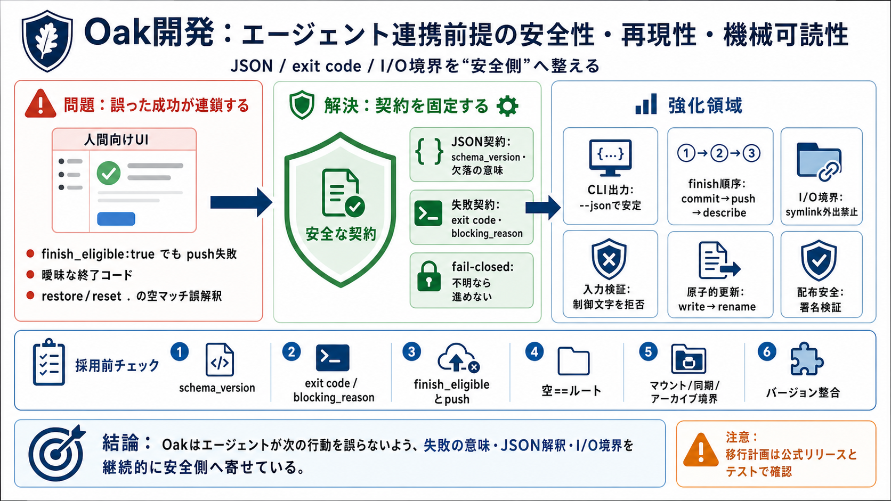

Changelog • sdtm.oak - GitHub Pages
With this release, users can now efficiently create the DM domain. The V0.1.0 release of {sdtm.oak} users can create the…

Oakの変更要約から見えるのは、エージェントが機械的に判断して実行できるように、失敗・境界条件・JSON整合を“安全側”へ継続的に整える流れです。
誤成功を減らし、誤解釈を封じる
CLI / マウント / 同期 / JSON契約 / I/O安全
エージェントは文字列のニュアンスを読めず、exit codeやJSONフィールドの意味で次の行動を決めます。だから“誤った成功”が起きると、そのまま次の操作へ連鎖します。
JSON: finish_eligible:true
実際: リモート未設定でpush失敗
終了コードが曖昧
ダーティツリー時の解釈ズレ
restore/reset . 空マッチ
“戻したはず”の誤状態
VCSを“人間向けUI”から“機械向けプロトコル”へ寄せるとき、必要なのは実装の正しさだけではありません。解釈がブレない契約（schema/コード/失敗理由）が安全の縫い目になります。
JSON: schema_version とフィールド意味の整合
終了コード/理由: blocking_reason 等で“失敗のしかた”を固定
出力の形式が安定しているほど、エージェントは分岐を誤らずに済みます。Oakはローカル/一覧/詳細など“どこを見ても同じ解釈”へ揃える方向に動いています。
schema_version を各CLI出力に揃える
圧縮/欠落/ Some(0) の扱いを明確化
--json で通知文を抑制
リモート到達不可・認証不可・署名検証失敗などは“安全側に倒して進めない”ことが狙いです。これにより、エージェントが「実行できた」と誤認する余地を減らします。
リモート未設定時に finish_eligible を誤って真にしない
ダーティツリー時の終了コード（例: exit code 4）を体系化
oak restore . と oak reset . で、空のフィルタが期待通りに解釈されない問題が修正されたと要約されています。空==ルートのセマンティクスを統一し、“戻していないのに成功”を防ぎます。
空マッチが repo-relative として解釈されない
パスマッチ関数のセマンティクス統一
復元・リセットの正確性が上がる
VCSは破壊や漏えいの影響が大きいため、I/O操作（マウント、同期、アーカイブ）を多層的に安全化しています。
シンボリックリンクでリポジトリ外へ出ない（例: oak archive）
ZIPが自分自身を取り込まない
reset/restore で境界を壊さない共通化
ツリーエントリ名やslug、コミットID関連などから制御文字を拒否し、曖昧な解釈（注入・復元差）を減らす方向の強化が繰り返し登場します。
ツリーエントリ名/オーサー/ブランチ名などで拒否
デシリアライズ差やフォーマット曖昧性を避ける
並行性やクラッシュ（途中停止）に備え、SQLite権限、マウントライフサイクル、プロセス制御、原子的更新（書いてからrename）などが段階的に強化されています。
SQLiteを 0600 に（情報漏えい/誤共有を抑制）
書いてから rename で原子的に反映
PID記録・終了手順、マウント再開/忘却の見直し
コミット→プッシュ→describe 等の順序や、再試行可能性（リトライの考え方）を揃えることで、エージェントが“次に何をすべきか”を誤りにくくしています。
finishオーケストレーションの手順整備
can_finish/finish_eligible と推奨文言の整合
誤配布や改ざんリスクを下げるため、minisign検証や配布物の整合など“運用の現実”に寄せた修正が含まれます。
crates.io（例: oak-cli → oakvcs-cli）
minisign検証で誤配布を防ぐ
OakMountアセット名不一致のサイレント欠落を修正
この履歴は変更点の要約であり、どのリリースで何が確定したか、互換性影響の移行条件が体系化されているとは限りません。
JSONスキーマv2の移行条件や破壊的変更の扱いが不明確
エージェント側パーサ/検証ロジックの追従が必要になり得る
Oakをエージェント基盤として扱うなら、次の“契約面”を必ず押さえるのが有効です。
JSON: schema_version と欠落フィールドの意味
exit code契約と blocking_reason の運用
finish_eligible / push / リモート未設定時の挙動
restore/reset . の空マッチセマンティクス（空==ルート）
マウント/同期/アーカイブの境界（symlink外出禁止・自己内包防止）
クライアント/サーバの同時バージョン整合（必要性を確認）
要約からの結論は、Oakがエージェント連携を前提に、失敗の意味・JSONの解釈・I/O境界・並行性まで“誤成功を防ぐ形”に整え続けていることです。
契約化（schema/exit code）とfail-closedで誤連鎖を抑える
変更点の断片だけでは移行計画が立てづらい
With this release, users can now efficiently create the DM domain. The V0.1.0 release of {sdtm.oak} users can create the…
* [Release Notes](https://kagent.dev/docs/kagent/resources/release-notes). # v0.9[#](https://kagent.dev/docs/kagent/re…
With the V0.2.0 release of 'sdtm.oak' users can now efficiently create the DM domain and various SDTM domains, encompass…
An EDC and Data Standard agnostic SDTM data transformation engine that automates the transformation of raw clinical data…
SDTM programming in R using {sdtm.oak} package - Rammprasad Ganapathy Resources mentioned in the workshop: - Workshop Gi…